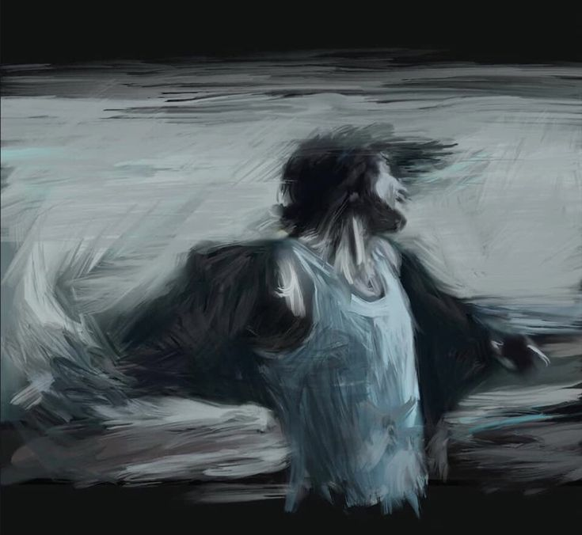
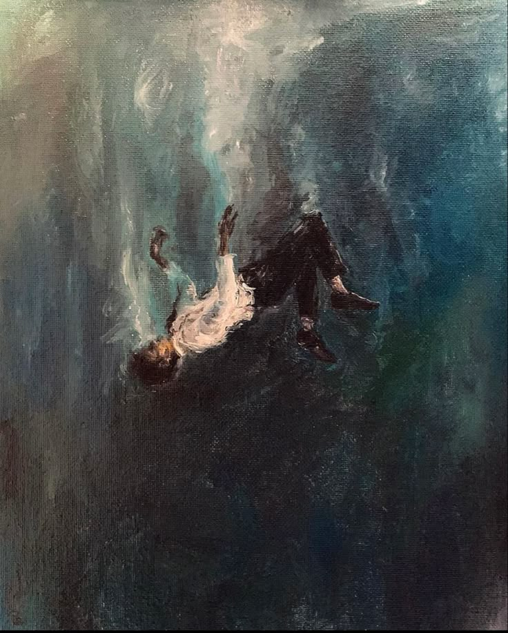

Melancholy
Genre: Narrative Exploration / Point-and-Click Detective RPG.
Premise: A solitary wanderer searches for small flickers of joy in a somber, decaying world. Inspired by introspective narrative games like Disco Elysium, it’s a story about finding purpose when everything else feels grey.
What You Do:
Investigate: Explore quiet, fading ruins and piece together lost memories.
Connect: Engage in deep, choice-driven conversations with broken souls.
Uncover: Find rare moments of warmth and hope hidden within the bleakness..
Why Play It:
A Linear, atmosphere-first journey focused on rich dialogue, mood, and a intimate story about healing from apathy.
Screenshots

